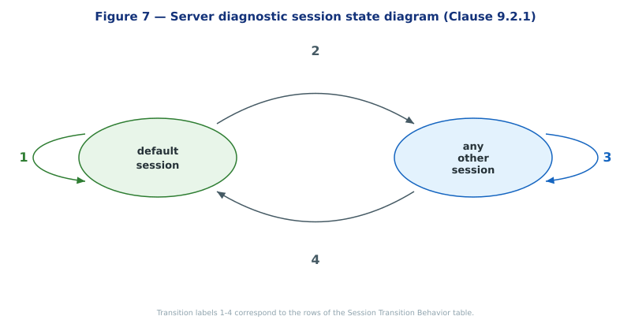
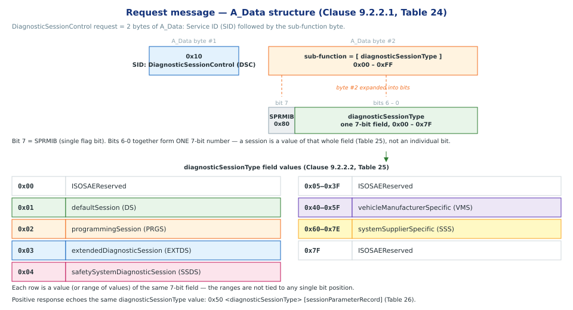

Diagnostic and Communication Management functional unit
ISO 14229-1:2013 — Service 0x10
Section
Section 1 — Diagnostic Session Control service
Diagnostic and Communication Management functional unit1 / 11
Introduction
- Service:
DiagnosticSessionControl(SID 0x10) [Clause 9.2] - Owner unit: Diagnostic & Communication Management (DCM) functional unit [Clause 9.1, Table 22]
- Purpose: enables different diagnostic sessions in the server (ECU) [Clause 9.2.1]
- A diagnostic session enables a specific set of services / functionality in the server [Clause 9.2.1]
- Server may also report data-link timing parameters valid for the active session [Clause 9.2.1]
Diagnostic and Communication Management functional unit2 / 11
Session — Key Concepts
- One session at a time
- There shall always be exactly one diagnostic session active in a server [Clause 9.2.1]
- Server always starts in
defaultSessionon power-up [Clause 9.2.1] -
Stays in
defaultSessionunless another session is explicitly requested [Clause 9.2.1] -
Identifying field
- Sub-function byte
diagnosticSessionType(request byte #2, range0x00–0xFF) [Clause 9.2.2.1, Table 24] -
This value both selects and reports back (in the positive response) the active session [Clause 9.2.2.2, Table 25; Clause 9.2.3.1, Table 26]
-
How to enter a session
- Client sends request:
0x10 <diagnosticSessionType>[Clause 9.2.2.1, Table 24] - Server replies positive:
0x50 <diagnosticSessionType> [sessionParameterRecord][Clause 9.2.3.1, Table 26] - Server may impose entry conditions (examples from the standard) [Clause 9.2.1]:
- Restricted to a specific client diagnostic address
- Safety conditions (e.g. vehicle not moving, engine off)
-
If conditions aren't met → negative response, current session continues unchanged [Clause 9.2.1]
-
Non-default sessions are supersets
- Functionality of
defaultSessionis included in every non-default session (exceptprogrammingSession) [Clause 9.2.1] - Non-default sessions require an active session timer, kept alive by
TesterPresent(0x3E) [Clause 9.2.1, Table 23]
Diagnostic and Communication Management functional unit3 / 11
Session Transition Behavior (Server-Side) [Clause 9.2.1, Figure 7]

| Label | Transition | Server Action |
|---|---|---|
| 1 | default → default (re-request) |
Full re-initialization of the session; reset all activated/changed settings, no changes to non-volatile memory |
| 2 | default → other |
Stop all events configured via ResponseOnEvent (0x86) |
| 3 | other → other (same or different) |
Stop RoE events; re-lock security and reset any dependent active diagnostic functionality; keep other active functionality (e.g. periodic scheduler, CommunicationControl, ControlDTCSetting) |
| 4 | other → default |
Stop all events configured via ResponseOnEvent (0x86); terminate/reset functionality not supported in defaultSession (e.g. restore normal communication, DTC setting); no changes to non-volative memory |
Diagnostic and Communication Management functional unit4 / 11
Non-default Session Expiry
- per Table 23 note (Clause 9.2.1):
"Any non-defaultSession is tied to a diagnostic session timer that has to be kept active by the client."
- a server in non-default session kept an internal timer and falls back to default session per timer expiry.
- The client keeps the timer from expiring either by:
- sending other diagnostic service requests, or
- sending TesterPresent (0x3E) periodically when no other diagnostic traffic is happening (Clause 9.6.1)
Diagnostic and Communication Management functional unit5 / 11
Session List — Overview [Clause 9.2.2.2, Table 25]
| Value | Session | Mnemonic | Cvt | Purpose |
|---|---|---|---|---|
0x00 |
ISOSAEReserved | ISOSAERESRVD | M | Reserved |
0x01 |
defaultSession | DS | M | Normal operating mode; no timeout handling needed; entered automatically at power-up |
0x02 |
programmingSession | PRGS | U | Enables services for memory programming (flashing) of the server |
0x03 |
extendedDiagnosticSession | EXTDS | U | Enables services for adjusting functions (e.g. idle speed, CO value) and other non-default/timed services |
0x04 |
safetySystemDiagnosticSession | SSDS | U | Enables services supporting safety-system functions (e.g. airbag deployment) |
0x05–0x3F |
ISOSAEReserved | ISOSAERESRVD | M | Reserved |
0x40–0x5F |
vehicleManufacturerSpecific | VMS | U | OEM-defined sessions |
0x60–0x7E |
systemSupplierSpecific | SSS | U | Supplier-defined sessions |
0x7F |
ISOSAEReserved | ISOSAERESRVD | M | Reserved |
(Cvt: M = Mandatory, U = User-optional per implementation)
- Clause 9.2.1, Table 23 maps the services to allowable defaultSession and non-defaultSession.
Note — The session value above is embedded in **bits 6-0** of the sub-function byte of the UDS request (bit 7 is the separate SPRMIB flag). Further detail of the message structure is in the next slide.
Diagnostic and Communication Management functional unit6 / 11
Session Info in UDS Request

- A_Data byte #1 — Service ID:
0x10(DiagnosticSessionControl / DSC) [Clause 9.2.2.1, Table 24] - A_Data byte #2 — the sub-function byte,
sub-function = [diagnosticSessionType][Clause 9.2.2.1, Table 24] - Bit 7 —
SPRMIB(suppressPosRspMsgIndicationBit),0x80 - Bits 6-0 — together form one 7-bit field,
diagnosticSessionType, range0x00 – 0x7F; a session is a value of that whole field, not a single bit [Clause 9.2.2.2, Table 25] - The positive response echoes the same value:
0x50 <diagnosticSessionType> [sessionParameterRecord][Clause 9.2.3.1, Table 26]
Diagnostic and Communication Management functional unit7 / 11
Special Notes: programmingSession Exit [Clause 9.2.2.2, Table 25 — 0x02 programmingSession]
- Only exit routes when
programmingSessionruns in boot software: 1.ECUReset(0x11) initiated by client 2.DiagnosticSessionControlwithsessionType = defaultSession3. Session layer timeout - On exit (defaultSession request or timeout), if valid application software exists → server restarts the application
Diagnostic and Communication Management functional unit8 / 11
Section
Section 2 — ECU Reset Service
Diagnostic and Communication Management functional unit9 / 11
Section
Section 3 — Security Access
Diagnostic and Communication Management functional unit10 / 11
Section
Section 4 — Communication Control
Diagnostic and Communication Management functional unit11 / 11